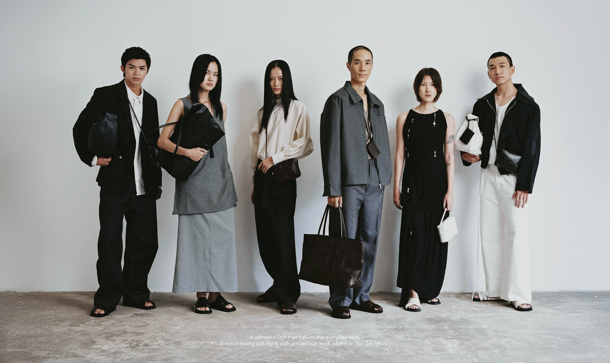

“WALK WITH US”
Read our journals

REFINED CASUAL
Our 'aha!' moment for Refined Casual came from observing how city life shapes the way we dress. In a fast-paced

THE MAKING OF BUN & KEO
Meet Bun & Keo: Most loved sandals from waa.ersWe named the "Bun" because the sandals' round toe looks just like a steamed bun, while "Keo"...
A MERRY LITTLE RED BOW
As it’s almost the most wonderful time of the year, the air crackles with anticipation as Christmas draws near. It is a time
URBAN STROLL
There is always something special about wandering around the city, through our getaway trip to Melbourne, we have
THE MAKING OF NƠM SANDALS
Taking cues from the nostalgic days of rural life, Nơm sandals — named after the traditional Vietnamese fishing gear — find their
A GATHERING OF INSPIRATION
Partnering with The Bloom and Gốm Saigon, we thrive to bring out a place where both contemporary and local elements blend